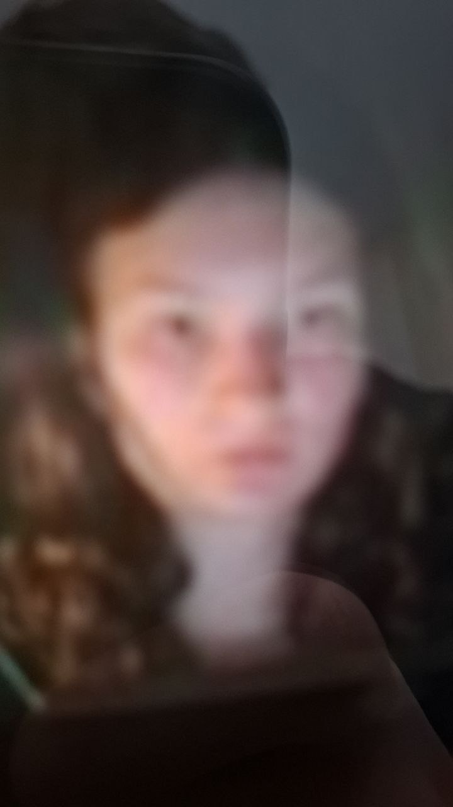

| Arina Kokina |
|---|
|  |
| Chocolate lover |
| 15th Febraury, 2008 |
| Telegram username: @arinaaaaaa15 |
|
Known relatives: Milana Kokina |
| Hobbies: writing |
| Organisations: The Island School (2023-2025) European Gymnasium (2025-now) Escape Room (2024-2025) Book Writers (2023-2024) Шау'Накторм (June 30th, 2024 - present) |
| Friends: Aleksandra Zhukova and other... |
Arina Kokina is a former student of The Island School that was a member of Grade 10B. She is known for her writings and her chocolate obsession.
Arina Kokina started studying at The Island School on the 11th of September, 2023 (in the 9th Grade).
Now Arina is studying at the European Gymnasium in Moscow.
Arina is friends with Aleksandra Zhukova and other girls from Grade 2027. She is also friends with Eugeniy Kolesov, but not with Ian Shumilin.
In 2023 Arina with some other classmates united for the Book Community Project. She (allegedly) was in the Writers team.
In 2024 Arina understood that she likes bookwriting projects. So she decided to make another book for her Personal Project called Leap In The Wrong Direction. Since it was a Personal Project, she wrote the text alone. But she collaborated with Vasilisa Matafonova and Sofia Zanti for the design. Vasilisa drawed illustrations (allegedly in ProCreate) and Sofia did the layout in Adobe InDesign.
Arina participated in the Summer Camp 2025. She was one of few people who didn't sleep at night. She said that she didn't sleep because it was the last sleepover with her classmate friends.
In November of 2024 Mr. Tagir assigned a group task to Grade 10B. Arina got into a group with Mikhail Bukach, Yury Mironenko and Yulia Zhurava. The task was to create 3 factual, 2 conceptual and 1 debatable questions from a specific video. As Yury remembers, at the end Arina and Yulia didn't come to the lesson due to theater rehersals (see: Alladin 2024). Fun fact: when creating a group in Telegram, Misha forgot who of Zhuravas he was in group with.
On February 19-21 2025 Grade 10 had an interdisciplinary[allegedly] unit about ancient Greek theater. Students were divided into 3 groups. Arina got into a group with Mikhail Bukach, Margarita Kolenchits, Tymur Marchenko, Yury Mironenko, Alina Zhurava and Yulia Zhurava. The task was to create a short play from Aristophanes' "Frogs". Arina's group made a boat from a cardboard box that Yury found near his house on the street.
Arina said that in February 2026 she may come to Cyprus to celebrate her birthday.
*Add some pics here*